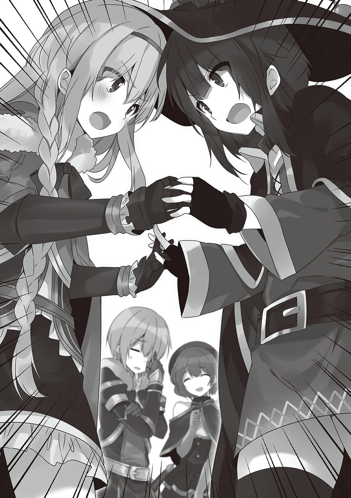

1
被传送到王都的我们久违地来到了王城前。
王城门前站着两名卫兵，他们对我们偷来的怀疑的目光。
「站住！前方闲人止步，这里可不是冒险者可以接近的地方！」
面对态度严厉的卫兵，我像是举起玉玺一样举起爱丽丝寄来的信给他们看。
「我是接到爱丽丝公主的委托，从阿克赛尔城前来的佐藤和真，有什么问题么？」
一看到印有王家纹章的信封，两名卫兵就变了脸色站得笔直。
「真，真是失礼了……！我们马上就去禀报，请稍等！这个信封可以交给我们么？」
「嗯，无妨」
我对恭敬的两名卫兵表现出稍微有些高高在上的态度，就被旁边的达克尼斯戳了。
确认信封的卫兵看到信封里的信后表示出了疑惑。
「嗯，里面的信有破损啊，这是……？」
「那种事无须在意！你想想，当冒险者会遇到不少事的对吧？你懂的吧，怪物之类的！」
「啊，原来如此……那么，请来这边的休息室等候」
总不可能说我因为太愤怒而撕了王家寄来的信，我只能随意敷衍了过去，一名卫兵带我们来到了休息室。
大家都各自坐下的时候，引我们过来的卫兵两眼放着光告诉了我们最近在王都盛传的传闻。
「——说到佐藤和真阁下，就是最近在王都也开始有些名声的那位吧？据说是您的队伍在之前的战斗中辅佐在最前线的城砦担任指挥的达斯提尼斯大人，把我军引领向了胜利。人们都说，那是一个以领队和真阁下为首，聚集了身为圣骑士的达斯提尼斯卿，拥有惊人魔力的大魔法师，还有补墙匠的厉害队伍」
「我说，美丽的大祭司的存在被省略了来着」
再怎么说我们也是葬送了最多魔王干部的队伍。
倒不如说至今为止名声没有传开才奇怪。
「到现在队伍成员中知道名字的似乎还只有和真阁下和达斯提尼斯卿，不过那边那位莫非就是传闻中能够使用爆裂魔法的大魔法使大人么？明明做出了巨大贡献却不知为何没有传出名字，于是就传出了是一位不愿出现在大众面前的，谦逊而又神秘的人的传闻……」
听了卫兵的话，惠惠脸上泛起微红嘴角咧开了，但她还是装作深思熟虑的魔法使的样子静静地答道。
「……嚯，有那样的传闻么？要说谦逊的话可能的确是那样吧。毕竟我是把通过冒险得来的金钱全都交给和真的人」
「呐，我的名字也没有出现来着。拥有世界级知名度的我的名字没有出现来着」
虽然惠惠的名字没有被传开大概是有别的理由，但她似乎被谦逊并且神秘这样的赞词捧得脚不着地，已经想不到其他事了。
看到惠惠表现出那样的态度，卫兵更加感动了。
「真，真是厉害，就是说对金钱和名声都没有兴趣么！？」
「呵……我的愿望唯有穷极魔法的真谛。在身为领队的和真无论如何都想要借用我的力量的时候，我是这么回答的。我需要的只是最低限度的餐费和杂费。还有就是，能够让我的力量用上正途的机会……！」
「哦哦哦哦哦哦！」
这家伙，明明是在差点被踢出队伍的时候哭求我说只要餐费和杂费就好让我不要抛弃她。
正在这时候。
「啊啊！真的来了！」
从敞开着的休息室的门口传来了悲痛的叫声。
站在门前的，是一个眼熟的戴着深深兜帽的魔法师。
那是兼任爱丽丝的导师和护卫的贵族大小姐蕾茵。
「你这说法真过分。我可是受爱丽丝之托才不远万里来这里的哦？按理说，有一场表彰刚刚打倒了魔王军干部的队伍的晚宴会也不过分吧？」
「呜……那，那是……」
蕾茵似乎对此也心中有数，有些尴尬地移开了视线。
但那也只是一瞬间，她立刻拉起我旁边的达克尼斯的手走出休息室，一边偷瞟着我的脸色一边窃窃私语起来。
『达斯提尼斯大人，不是说好了要想点办法让他拒绝这次的委托的么！？把爱丽丝交给那位的话毫无疑问会引发外交问题……！』
『我知道，虽然我也尝试着努力过，但他的抵抗意外地激烈。不过万幸的是那个男人以为我让步了完全放松了警惕。我准备到了邻国首都就给他灌药，让他在爱丽丝殿下逗留期间一直躺着』
『哦哦，不愧是达斯提尼斯大人！那样我就放心了！』
……那些家伙都在谋划些啥啊。
话说，原来达克尼斯企图拘束我是国家的委托么。
要说我为什么能够理解她们两人的密谈的话……
「怎么了啊和真，一直盯着她们的脸看」
「没什么，就是在确认最近学会的技能的情况」
没错，都是拜『读唇术』这个新技能所赐。
用这个技能只需要看对方的嘴就能理解大致的对话内容。
本来是想着闲得没事的时候偷听一下冒险者工会的人的对话才去学的没什么重大意义的技能，不过这还真是相当好用。
这是，休息室外突然吵闹了起来。
「佐藤和真！佐藤和真来了是真的么！」
依旧耳熟的声音的主人是我稍微有点不擅长应付的女性。
我们应声看向门口，便看到以一身白西装为标志的大贵族，身为爱丽丝护卫的库雷娅冲进了房间。
库雷娅一看到我，就无言地拉着我的手臂把我拽到了房间角落里——
「——哦，怎么了白西装。你也反对我担任护卫么？」
我表示出警戒，但库雷娅却弓下身子小声对我说。
「别叫我白西装你这个无礼之徒。但这次来得好，我得向你道谢」
……
「你居然会对我道谢？今天吹的是什么风？你有什么企图？」
她的态度让我更加警戒——
「没有什么企图……不，要说企图的话确实也是有的。喂，这个交给你」
库雷娅这么说着，把吊在胸口的，雕着家纹的吊坠交给了我。
那是平时达克尼斯也有带的，证明贵族身份的重要挂饰。
「……说真的到底怎么了？你平常都是一副那种态度，但其实是迷上我了吗？但是很遗憾，我最近跟某个女孩子关系走得很近。身为正直男人的我是不会到处沾花惹草的。不好意你还是放弃吧」
「你傻么，怎么可能！不如说我为什么还没开口就被发卡了啊！」
激动起来的库雷娅忽然注意到自己的音量，环顾了一下四周立刻恢复了平静。
「不是那样。我认为唯独这次我和你是可以联手的。因为这次的会面是含有各种政治上的理由的……而且就算没有那些因素，我也很反对爱丽丝殿下的婚约」
「好，说来听听」
面对摆出谈正经事的态度的我，库雷娅从包里取出了什么。
「爱丽丝殿下要去见的事邻国的第一王子。但是，那个小鬼因为从小娇生惯养所以实在是任性得不行。与生俱来的战斗才能远远不及爱丽丝殿下，外貌更是配不上这个世界上最可爱美丽的爱丽丝殿下。而且，邻国艾洛德还一直藐视我国。爱丽丝殿下嫁过去的话，肯定会被暗中中伤为乡巴佬处境会相当尴尬……于是我要把这个交给你」
库雷娅一脸坚毅地把一个黑色的小包递给了我。
「这是？」
「贵族葬送政敌的时候使用的违禁毒药……」
我一接过来便立刻丢掉了。
「喂，你以为把那个弄到手得花多少钱！」
「别把我设计成刺客啊！要是你想把婚约搅黄我很乐意协助你，但我可没有当弃子的打算！你丫的该不会是打算把我和那家伙一起从社会上抹杀掉吧！」
库雷娅小声咂了咂舌说——
「没办法了。那么，在护卫任务之外还有一件事想要委托你。只要有刚才交给你的项链，就能在某种程度自由地行使我们希福尼亚家的权利。唯有这次，我们家会当你的后盾。怎么能把爱丽丝殿下交给那种野男人，无论如何你都要给我去把婚约搅黄了」
「那我很乐意。怎么能眼睁睁地看着爱丽丝遭遇不幸。交给我吧，对方是个不知天高地厚的臭小鬼的话，看我用尽千方百计去妨碍他们」
听到我不假思索的回答，库雷娅顿时喜笑颜开。
「我似乎对你有些误会。我为我至今为止的无礼向你道歉，爱丽丝殿下就拜托你了」
「没什么，我也有很多对不住你的地方。看来你对爱丽丝的心意不假。我就算这样也是和无数强敌交手并活下来的男人，这种程度不在话下」
这是常年围绕爱丽丝明争暗斗的我们两人互相理解的瞬间。
我和库雷娅互相伸出右手，紧紧握住了对方。
「在现在这种场面下，就感觉你比谁都要可靠。我没法从这个国家抽身，不过报酬会很丰厚的，万事拜托了」
「对于我来说有你这样强有力的后盾也是求之不得。还有，报酬的话，等到一切顺利之后，一起喝个酒告诉我爱丽丝小时候的可爱之处就够了」
「何等无欲的男人。到时候挑灯夜谈也无妨，让我告诉你幼年时代的爱丽丝殿下蕴藏着多么强大的破坏力」
我们丝毫不顾周围相视而笑……
「两位真是相谈甚欢啊」
突然听到有些寂寞的声音转头看过去。
便看见一一个很怕生似的在休息室门口扭扭妮妮地偷偷看着这边的少女。
公主爱丽丝在和我对上视线的瞬间，便腼腆地说道。
「好久不见兄长大人。让你久等了……！」
2
被带到王城内部的我们站在了一辆外观朴素但却相当牢固的马车前。
不，准确来说那不是马车。
本来该有车轮的地方什么都没有，而且拉车的也不是马。
「是蜥蜴跑者啊！和真，那是蜥蜴跑者啊蜥蜴跑者！」
兴奋起来的惠惠拉起了我的衣袖。
没错，拴在看似马车的交通工具上的是两只蜥蜴。
像以前我们接受委托讨伐的蜥蜴一样直立行走的怪物们一看到我们就发出了怪叫声。
「啾啾啾！」
听到和吓人的面孔不相符合的可爱叫声，阿库娅和惠惠两眼放出了光芒。
「嗯，要使用王家的龙车么？我听说这次的会面是保密的来着」
「普通的马车太费时间了。一般去邻国要花费十天，但使用王家特制的龙车的话就能大幅缩短时间」
库雷娅一边这么说着一边念念有词，然后对龙车伸出了手。
然后龙车便浮到了据地面十公分左右的高度。
原来如此，没有马车那样的车轮是因为这个啊。
这样的话就让蜥蜴跑者拉车也基本没什么阻力，而且看起来的确很快。
「毕竟要是十天以上都见不到爱丽丝殿下的话我会疯掉的。用普通马车的话来回一趟要二十天以上。那叫我怎么忍」
「那干脆你也一起来不就好了么？」
听我有些无语地这么说，库雷娅一副不敢的表情皱起了眉头说。
「不都说了这次的出行是要保密的么？要是有太多随从的话，会被人猜疑是什么大贵族。为此龙车也改造成了朴素的外观。而且，我也算是这个国家的要人。肩负着很多工作。实在不能好几天都放着国内政务不管」
这家伙居然还是要人，真是让人担心这个国家的未来。
这时，达克尼斯做到了车夫台上牵起了拴着蜥蜴跑者们的皮带。
负责驾车的竟然是达克尼斯。
毕竟是贵族，骑马似乎还是会的。
虽然要驾驭的不是马，但达克尼斯自称是没有问题。
对于把事交给笨手笨脚的这家伙，心中还是留有一抹不安……
本次担任爱丽丝护卫的似乎只有我们。
要是有很多死脑筋的人跟来的话，他们大概会冲着我发火说不许对待爱丽丝那么随便，所以在这层意义上来说是求之不得。
爱丽丝大概是在我们来之前就做好旅行的准备了吧。
装备着一套非常有王族气派的铠甲和灿灿生辉的剑的爱丽丝等不及了似的坐上了龙车。
「兄长大人，请这边坐！我旁边的位置空着，路上我们就像以前一样玩游戏吧！」
「哦？爱丽丝真是粘哥哥啊。好，哥哥我可要加把劲了」
乘上龙车的爱丽丝指着自己旁边的座位对我招着手。
她大概是因为长时间没有见到我而相当寂寞吧。
有种比分别的时候还要更亲近我的感觉。
这时，跟在后面上车的惠惠把脸凑近爱丽丝说。
「喂，区区小弟敢占最好的位置可真是长本事了啊！快把视野最好的车夫台后面的座位让给我！不然下次我就不带你玩了！」
「太，太赖皮了！这明明不是一码事，而且今天的我不是小弟，是公主殿下！很了不起的！车夫台后面的这个座位我可不会让出来，无论如何都想要的话我们就来较量较量！」
这两人许久不见却一下就纠缠了起来，库雷娅和蕾茵简直像是家常便饭一样看着她们捂住了头。
「……我说达克尼斯，你们瞒着我去见过爱丽丝了？感觉不知不觉中，惠惠和爱丽丝的关系变得好得不得了了」
「不，没有，才没那种事……话说，我倒是还奇怪为什么惠惠会叫爱丽丝殿下『小弟』」
在我对她们两人的样子感到疑惑的时候，座位似乎就定下来了。
「那么，我和爱丽丝就坐车夫台后面了」
「好啊，路上我可不会输给你。输家要听从赢家的命令！」
咦。
「我说，难道不是为了坐在我身边而展开较量的么？为什么会变成这样啊？」
顺带一提龙车是四座的。
车里有两排两人座。
「我要坐达克尼斯旁边。我想在最前面看旅途风光」
被旅途风光吸引的阿库娅要提出要求坐到了车夫台，于是就剩下我一人。

咦~~~这绝对不对劲吧？
说好的左拥右抱的旅行呢。
我有些不满地乘上了龙车后，库雷娅跑到了爱丽丝旁边。
「爱丽丝殿下，没忘东西吧？手帕带了么？以备万一的零花钱呢？情况紧急的时候一定要毫不客气的使用我交给你的那些卷轴和魔法道具哦？感觉寂寞的话也请一定不要哭……」
「库雷娅，我不是小孩子了没问题的。不如说你不放开的话我们就没法上路了……」
站在库雷娅身后的蕾茵把抱住爱丽丝不放的库雷娅拖走了。
「那么爱丽丝殿下，请不要勉强自己，祝您旅途平安愉快！」
「佐藤和真，爱丽丝殿下就拜托你了啊！有谁敢对爱丽丝殿下无礼砍了也无妨！……爱丽丝殿下啊啊啊啊啊啊！」
在二人的目送下。
「那么二位，我去去就回！」
爱丽丝对她们挥了挥手，达克尼斯便扬起鞭子让蜥蜴跑者们跑起来——
3
本次的委托有一半左右都是顺带旅行的悠闲龙车之旅。
我曾经这样想过。
「哇啊啊啊啊啊啊啊啊和真先生！和真老大！！跟我换下座位啊！好吓人啊！」
「喂，这是不是也太快了点！太快了，快到要是出什么事故就当场死亡了好么！」
在阿库娅被蜥蜴跑者过快的速度吓得直叫唤的同时我也喊了出来。
漂浮在地面之上几乎没有什么摩擦力的龙车在蜥蜴跑者的牵引下以恐怖的速度奔走着。
「没事的和真，王族的龙车上施加了强力的结界。就算万一遇到了事故，会出事的也只有车夫台。哈哈哈，太棒啦！这些蜥蜴跑者真是太棒了，不错，再快一点！」
「快停下！我说，快让我回龙车里面去！」
听到达克尼斯莫名情绪高涨的话后阿库娅哭叫了起来，同时爱丽丝和惠惠却像小孩子一样撒着欢。
「和真和真，刚才有类似蝎尾狮的生物在交尾啊！」
「在，在哪里！？我也想看蝎尾狮！」
不知是因为窗外瞬息万变的景色而顾不上玩游戏，还是因为是头一次像这样出行。
两眼放光的两个小朋友竞相贴在车窗上看着窗外的景色。
「你想看的不是蝎尾狮而是交尾吧。真是的，又有企图对和真上下其手的贵族大小姐又有闷声色狼公主，这个国家真的没问题么」
「王族才没有闷声色狼！……话说，企图对兄长大人上下其手的贵族大小姐是指谁？……难道说」
被从刚才开始就情绪高涨的两位小朋友紧紧盯住的达克尼斯在车夫台红透了脸。
「我说，在这个速度下撞上怪物的话要怎么办啊！？我这样尊贵的存在要是出了什么事这个世界可就完蛋了啊！我说达克尼斯你在听么！？」
「没事的阿库娅，这辆龙车装备有驱散怪物的魔道具，所以不怎么会有怪物撞上来。没错，只要运气不算太坏就没有问题……」
「我说和真，达克尼斯她插旗了！求你了让我进龙车里去！」
——难道这样让人想象不到是王族出行的喧嚣会持续到接下来的每一天么。
话说到了现在我才开始怀疑，我们真的能胜任护卫么。
这种迟来的不安马上就被干脆地拭去了。
！
在爱丽丝喊出来的同时，她手中的剑便释放出了闪光的斩击。
像漫画还有游戏中出现的勇者的必杀技一样的斩击把挡在我们面前的巨大牛型怪物劈成了两半。
不知是不是因为达克尼斯插下的旗，一大群怪物堵塞了道路。
毕竟还是不能直接撞上去，所以停下了龙车下车驱逐怪物……
我对旁边的达克尼斯招了招手叫她过来。
「我说，为什么爱丽丝那么强啊？这样不是根本不需要我们么？」
「爱丽丝殿下可是王族啊。王族和有权势的贵族从以前开始就在不断引进强大勇者的血脉，让潜在能力得到了飞跃性的提升。并且还在各种领域都接受到了最高等的教育。再加上毫不吝惜地食用经验值丰富的高级食材不断提升等级，还用从勇者那里继承的强力武器战斗。你不知道陛下和第一王子殿下现在还在最前线战斗么」
那种事我怎么知道啊，既然如此王族去打倒魔王不就好了。
我就觉得护卫只有我们很奇怪。
这时，爱丽丝满面笑容地抱着剑跑到了对她的强大感到有些无语的我跟前。
「怎么样兄长大人！我努力了一把！」
看到一脸想要表扬的爱丽丝的样子，我就觉得什么都无所谓了。
「真不愧是我妹妹。虽然不及不断葬送魔王干部哥哥我，但这么强还是足以拿到及格分了。就这样加油努力吧」
「虽然不知道兄长大人的那份自信是从哪来的，不过先锋就包在我身上！且看我用这祖祖辈辈传下来的神器将怪物一扫光！」
刚才这孩子说神器来着？
「我说，那把剑是什么啊？看起来超贵，还闪闪发光的」
「这个么？这是据说叫什么什么咖喱棒的国宝。似乎是能保护持有者免受一切异常状态和诅咒的神器哦？我觉得剑鞘很漂亮就跟父王撒了娇，他就给我了」
我似乎听说过那个什么什么咖喱棒。
在我躺尸期间惠惠在我下体写了类似的涂鸦，这让我记忆犹新。
不如说，那不是在地球基本家喻户晓的出名圣剑么。
这种东西不交给在前线战斗的勇者而交给公主殿下真的没问题么？
被抢走了风头的惠惠不知为何居然开开心心地对嘻嘻笑着的爱丽丝说道。
「虽然只是小弟，但不愧是吾之左臂。要是发现怪物就这样一刀两断吧」
「好的，包在我身上！」
不对吧。
什么包在我身上啊，我们是护卫，所以让爱丽丝去砍怪这不好吧。
「我说惠惠，又是左臂又是小弟到底是在说什么？你们是不是在我不知道的时候做了些什么奇怪的事啊？我总有点不太好的预感，你和爱丽丝应该是只有书信来往的吧？」
「你真是失礼，我们只会履行正义。而且，到目前为止，我还只是和左臂右膀一起找到窝点开始扩张地盘的程度。等我们成为更加巨大的组织之后就让和真你也加入」
也就是说和朋友一起造秘密基地玩么。
这家伙无论多大都还是有这种小孩子气的地方啊，明明在二人独处的时候偶尔会做出一些让我心跳加速的举动……
4
前往邻国的旅程的第一天。
说实话，我没想到爱丽丝会强到这种地步。
由于周围暗下来了，所以我们便停下开始准备野营，这是在我们刚下龙车时候的事。
「真不愧是爱丽丝殿下。没想到竟然已经如此强大，看来真的是非常努力呢」
达克尼斯像是为妹妹的成长感到高兴的姐姐一样对到现在为止一路秒怪的爱丽丝露出了温柔的微笑。
没错，接受了护卫的委托的我们完全没有出场机会。
轻松倒也不错。
虽然不错，但作为哥哥的威严之类的东西可能就崩坏了……
受到达克尼斯夸奖的爱丽丝有些怀念似的眯起了眼睛说道。
「说起来以前也经常受到拉拉蒂娜的锻炼啊。我也是多亏了那些锻炼才能变强的。我很感谢拉拉蒂娜」
「呵呵，不敢当」
面对有些害羞的爱丽丝，达克尼斯行了个君臣之礼露出了微笑。
……
「不过你之前说过达斯提尼斯家是守护王家的一族来着。今天你完全是处于被保护的状态一点用场都没有派上啊」
「！？」
听到我不经意间的一句话，达克尼斯的表情僵住了。
「你你，你说什么呢。我只是觉得今天遇到的那种程度的怪物正适合给爱丽丝殿下做实战演练……！」
爱丽丝慌忙帮隐藏不住动摇的达克尼斯说话。
「兄长大人，拉拉蒂娜在关键时刻是王家的守护者。是我们国家的铠甲和盾牌。那样的小事不值得拉拉蒂娜出马，在我遇到危险的时候她一定会站到前面保护我的！」
「爱，爱丽丝殿下……！」
达克尼斯感激涕零地抱住爱丽丝，被爱丽丝摸着头安抚着。
明明刚才达克尼斯还一副为爱丽丝的成长感到开心的姐姐的样子，现在却感觉分不清谁是姐姐谁是妹妹了。
放着依旧别扭的达克尼斯不管，我们开始了野营的准备。
仔细一想，对于平时不怎么出远门的我们来说真正的野营这还是第一次。
虽然在护卫这方面没能展现出优点，但为了取回作为哥哥的威严，我还是得带头撑起帐篷准备好食物。
正当我感觉像是去远足一样有点兴奋不已的时候，似乎恢复过来了的达克尼斯拿出了一个像是魔道具的东西。
「那么要准备住处了，爱丽丝殿下，请退开」
她这么说着把四角形的物体打开丢向了开阔的地方。
那个物体在一瞬间的发光同时，在开阔处建起了一座小小的贵族宅邸。
「……这啥」
「有什么好这啥的。你难道想让一国的公主野营么？这是国家持有的最高级魔道具之一，附有祛除怪物的结界携带也很方便的……」
「有完没完啊这些玩意！话说这样真的还有必要找我们来么！？」
虽然我不禁对开始说明魔道具的达克尼斯做出了吐槽，但这的确是比住帐篷好了不止一点。
进入连停放龙车的小屋都配备好了的宅子后，我们放下行李休息了起来。
——作为最后的抵抗，拥有料理技能的我总算是把料理的活揽到了自己身上。
其他人现在都在探索已经分好了房间的魔法宅邸。
毕竟爱丽丝身为公主，平日吃的都是些上好料理，大概对美食已经厌倦了吧。
这么一来，平时不容易吃到的东西大概比较是和爱丽丝。
我在寻找料理的材料的同时，确认着厨房的情况。
明明是建在既没有上水道也没有下水道的这片空地上的宅子，一拧水龙头却能出水，我对这种不讲道理的事感到稍微有点愤怒。
「兄长大人，有什么可以帮你的么？」
突然从身后传来了声音。
转过头去，便看到了从厨房们背后探出头的爱丽丝。
「怎么能让公主殿下帮忙做料理啊？这可是我展示手艺的机会，你就乖乖等着吧」
「就算是公主也能帮上忙的！不如说，在王城的时候不管我怎么求厨房的人他们都不肯让我做料理，都说那种事是下人做的……」
面对变得失落的爱丽丝，我心头涌上了一点点罪恶感。
被温室栽培的公主殿下确实是没什么机会做饭啊。
……好。
「那就请你稍微帮下忙吧。但做料理可不是简单的事哦？你可要好好按照我说的去做，千万注意不要受伤了哦？」
「好的，我明白了兄长大人！」
看着喜笑颜开的爱丽丝我内心一阵暖意，我从备好的魔道冷藏库里拿出食材思考起如何给爱丽丝一些简单的工作。
爱丽丝平时不太能吃到，而我又能做出的简单料理。
「那么，今天就来做炒饭和饺子吧」
「好的！……chaofan和jiaozi？那是什么？」
我首先取出了冷藏库里的卷心菜。
「炒饭就是炒饭。这是好吃到被誉为没人不喜欢的高人气料理，生长在温室之中的爱丽丝和达克尼斯可能不知道就是了」
「是那么受人喜爱的料理么？真是遗憾，我都不知道。请务必教我！」
在爱丽丝尊敬的目光注视中，我一面注意不让她发现我嘴角的坏笑，一面把手中的卷心菜放到了菜板上。
「首先要做饺子馅！饺子馅的材料是卷心菜和韭菜和绞肉……哦豁！」
「啊啊，卷心菜！」
被放在菜板上的卷心菜不知至今为止是不是都在装死，在我把菜刀朝向它的瞬间它就从敞开的窗子飞了出去。
为了避免被烟呛着而打开窗子坏了大事。
「……听好了爱丽丝，就像刚才那样，料理是会因为一瞬间的大意而死无葬身之地的工作。一定要多加注意」
「兄长大人，确认食材的生死是基本中的基本，就算是不谙世事的我也知道哦」
——那天晚上。
「和真，这个料理是什么？还是头一次见这种食物」
看着桌上摆着的料理，达克尼斯充满兴趣地问道。
在那之后，我们和第二只卷心菜展开了激烈的搏斗，爱丽丝还遭到了炒饭材料的洋葱的偷袭被辣哭了眼睛，但最终我们还是成功做出了炒饭和饺子，还有蛋汤之类的。
「拉拉蒂娜，这就是好吃到被称赞为无人不喜的高人气料理，名为炒饭的食物。其实在制作这道料理的时候我也帮忙了！」
「爱丽丝殿下帮忙做的！？爱丽丝殿下可真是勤劳。我真是太期待了」
看到帮了忙的爱丽丝挺胸抬头的样子，达克尼斯露出了微笑。
我也立刻把料理送进了口中，在对料理的完成度感到满足时，爱丽丝和达克尼斯一脸复杂的表情盯着菜肴研究起来。
「拉拉蒂娜，这道料理的确不愧为高人气料理。这种叫炒饭的东西明明只是用火炒一下做出来的料理却非常有味道」
「这里面并没有用很高级的食材吧？为什么这么优秀的料理没有被端上王族和贵族的餐桌，实在是令人费解……」
我倒是觉得要是在王家或者贵族的晚宴上端出炒饭肯定是会被掀桌子的来着。
我忽然注意到，阿库娅和惠惠看到两个不谙世事的大小姐享受着大众料理对我投来尊敬的目光，便两眼放出了光。
怎么说呢，就像是发现了有趣的玩具一样。
「我说和真，明天我来做饭吧。我会让她们尝到美味的料理的」
「那么后天晚上就交给我吧。我用以前在红魔乡经常吃的料理招待你们」
惠惠先不提，平时都不愿意做饭的阿库娅会说这种话很是稀奇。
不过反正旅途还要继续。
要是她们愿意帮忙的我我自然也是求之不得。
「喂和真，这个叫薯片的零食相当不错啊」
「是啊，根本停不下来！」
我一边对因为餐后的垃圾食品两眼放光的两位大小姐忍俊不禁，一边遐想起了明天的旅程。
5
「好了兄长大人，今天也赶快来做料理吧！」
第二天晚上。
除了对率先扫荡堵塞道路的怪物的爱丽丝燃起对抗心理的惠惠施放了爆裂魔法之外旅途一切正常……
「爱丽丝真有干劲呢。我看你很有前途，今天就教你我的拿手好菜吧！」
「真的么！谢谢你，我会加油的！」
今晚不止我和爱丽丝，阿库娅也来到了厨房。
到了现在我才总算是反应过来。
惠惠暂且不提，不过阿库娅似乎是想要在旅途中教唆这位不谙世事的公主殿下和达克尼斯一些多余的事。
顺带一提达克尼斯在陪着耗尽了魔力的惠惠。
阿库娅看了看冷藏库取出了几种食材。
「今天的晚饭是蛋黄酱鲔鱼饭」
阿库娅把手插在腰间洋洋得意地说道。
这家伙精神还正常么。
虽然让公主殿下吃了炒饭的我也不好说什么，但干这种事的话，之后真的不会被喷死么。
「又是没有听说过的料理呢。兄长大人周围的各位都很博识呢！」
「像我这么厉害的大祭司那也是自然的哦？我告诉你，这可是在着急的时候能够迅速做出来的料理。对于会被一瞬间的大意夺走性命的冒险者来说是必不可少的」
「原来如此，是冒险者的专用料理对吧！」
阿库娅一边对爱丽丝说这种不负责任的话，一边打开鲔鱼和蛋黄酱倒在了饭上。
「完成了」
「真是简便啊！」
我还是要再说一遍，这家伙脑子真的还正常么？
这时，阿库娅不知是不是觉得光这样实在还是有点不妥，又从冷藏库里拿出了什么……。
「光这个的话大概很容易腻，所以我也会准备好拌饭和蛋浇饭」
「好的，我非常期待！」
一脸稀奇地看着蛋黄酱鲔鱼饭的爱丽丝带着满面笑容这么说道。
——端完所有人的料理后我也坐到了餐桌边，今天两位大小姐也兴致勃勃地品尝着料理。
「拉拉蒂娜，这种料理一瞬间就能做出来哦。连一分钟都不到」
「那是真的么爱丽丝殿下？喂和真，怎么不早点告诉我还有那么方便的料理。光是能那么快做出来，这种料理就值得发扬了」
除了你们多半谁都知道。
「不止是酱油和盐，辣油浇在饭上也非常好吃的」
阿库娅这么说着往自己的饭上倒上辣油，像是吃高档料理一样优雅地吃了起来。
「……阿库娅，说实话我一直都觉得你是个不学无术的人。但真是人不可貌相啊，请原谅我的肤浅」
同样以贵族的礼仪优雅地吃着拌饭的阿克尼斯对那样的阿库娅低下了头。
「这世界上还有很多你们不知道的事。爱丽丝和达克尼斯都是大小姐所以也没办法。下次我教你们如何巧妙地吃到杯装冰淇淋粘在盖子上的部分之类的，各种有用的小技巧」
感觉光是向爱丽丝灌输那种事情就会惹火权贵们。
虽然很想全力吐槽，但看爱丽丝她们对阿库娅投去尊敬的目光，又不忍去破坏这种气氛。
我一脸微妙的表情吃着蛋黄酱鲔鱼饭，同时旁边的惠惠也一句牢骚话都没有，默默地狼吞虎咽。
虽然有点担心起明天的菜色，但后天就到艾洛德王都了。
没问题，只有明天是惠惠做饭。
而且这家伙手艺也还不赖。
没错，应该没问题——
6
「爱丽丝！逃到你那边去了！听好，一定要注意别被夹到手指了！」
「我知道了，这边就交给我吧！啊，从岩石缝隙里又钻出来一只龙虾！」
还有一天到达艾洛德。
沿着道路奔驰的我们根据发现了河流的惠惠的指示，停车小憩。
「惠惠，这种龙虾特别小，真的要吃这个么？这难道不是虾苗么？啊，好痛痛痛……」
直到大腿都泡在河里的达克尼斯被龙虾夹到手中叫了起来。
声音中带着点喜色也是家常便饭了。
「那不是龙虾的虾苗。因为没有生息在广阔的海洋而是狭窄的河流里，这些龙虾是长不大的。嘿呦，可别想逃！这样就抓到第四只了！」
在浅滩处翻着石头的惠惠当场抓住了龙虾。
没错。
「和真和真。我有话想说……」
「别说出来。那些家伙在抓的是大龙虾。是配得上入公主殿下口的高级食材，龙虾。懂了么？」
我们现在在抓小龙虾。
听到惠惠在红魔之乡常吃的料理的时候我就该提高警惕了。
家境那么贫困的那家伙根本不可能端得出什么高级料理。
「不知是不是因为这一带没什么人烟，收获颇丰啊！这么看来今晚晚饭会很豪华！」
「我还是头一次从亲手准备食材开始做料理！原来做料理也能做得这么开心啊！」
「惠，惠惠，帮我把这玩意弄下来！这家伙不知不觉地夹住我的脚趾了……！」
不知是不是本来就很少在河边玩水，两位深闺大小姐快活地捕捉着小龙虾。
我一边看着那和平的景象——
「王家的人放在冷藏库里的各种食材可不能浪费了。我去料理那边的食材」
「休想一个人逃跑。你逃了我们每个人的任务就会变重」
——总算是到了日落时分，在我们准备好今晚的住处后。
「好了爱丽丝，看好咯？我让你见识一下，我在料理方面也是很行的！」
「好的，请多指教！」
情绪相当高张的惠惠面对大量小虾摆足了架势。
惠惠不知是不是想让爱丽丝看到自己的优点，对料理表现出了超乎平常的热情。
「虽然一般来说是要泡在水里一晚上让它们把泥巴吐出来的，但这些虾是在非常干净的水域抓来的所以肚子里没有泥巴。就这样料理也没有问题」
惠惠对公主殿下灌输起吃小龙虾的知识。
之后我就跟爱丽丝说一句，让她回王都之后别告诉别人我们教过她捕捉和食用小龙虾的方法好了。
「那么，首先要去除虾……龙虾的腥味。这一步只需要泡在酒里就可以了，我看……啊，这个就行了吧」
惠惠从冷藏库里取出一瓶酒，倒进了碗里。
虽然记得那是某人非常期待的高级酒，但我还是选择装作没看见。
「就这样放置一会儿，腥味就会消失变成香味。好了，在那期间做些事前准备……」
惠惠毕竟照顾过自己妹妹，动作非常麻利。
爱丽丝向那样的惠惠投去了尊敬的眼神。
「啊，我一个人都做完了啊。准备做到这里就差不多了，那么……」
不知是不是感受到爱丽丝那样的视线觉得很开心，惠惠一个人做完所有准备后就立刻开始了料理。
从小龙虾汤开始，还有用铁网烤出来的盐烤虾，然后还有用辣酱做出的
展现出意外高水准的家务能力的惠惠做完料理后满足地吐了口气。
「最近都是和真在负责做饭。偶尔也请大家尝尝我亲手做的料理。好了爱丽丝，至少帮忙分下餐」
「啊，好的！抱歉，一不小心看入神了……」
「是么，看领袖出彩的样子看出神了的话就没办法了！爱丽丝你快去洗手吧，分餐我来做就好」
我对非常好搞定的惠惠提出了疑问。
「我说，领袖是什么意思？」
「……没什么」
「——好吃。刚抓到的新鲜龙虾特有的鲜味充分溶入了汤里，让汤的味道变得非常浓厚。而且，微微残留着的一点泥土味也通过铁网烤这种料理方法中和，让人不会反感。最绝的是这个……！」
达克尼斯一边说着像是料理节目的主持人一样的话，一边享受地把小龙虾料理送进嘴里。
虽然她像美食家一样对这些料理赞不绝口，但我很想告诉她这不是龙虾，而是叫作小龙虾的， 随处都有的玩意。
看了看爱丽丝，她不知是不是对烹饪自己捕捉来的食材这种行为感到新鲜，非常开心地吃着。
惠惠说今天食材抓太多了，去给蜥蜴跑者们喂食了。
……也就是说，现在就是处理掉这些玩意的机会。
「我说和真，我今天突然想吃点青蛙，我去把冷藏库里青蛙炒来吃了，所以我的这份就让给你了」
「我已故的祖父就是因为去检查田地情况时被大群的小龙虾袭击而死的。在那之后我就不吃甲壳类动物了。所以我的就给阿库娅你了」
…………
「你以为你能骗过神之眼？我知道在你差点被拖拉机碾被送去医院的时候，你祖父还活蹦乱跳地赶到医院去了！而且你不是还吃过霜降红蟹么！」
「你才是，想吃青蛙是个什么鬼，自己被青蛙吞进去好几次，是哪来的胆子吃青蛙吃得那么爽！」
为了推让料理而纠缠起来的我们感受到了身后的气息。
去给蜥蜴跑者喂食的惠惠就站在我们身后。
「喂，要是你们对我们一族秘传的料理有什么意见的话不妨说来听听啊」
「我们只是在开点小玩笑而已。当然是会好好品尝的」
「没错，只是闹腾的太欢了而已，这虾看起来挺好吃的，走起」
我和阿库娅做好觉悟选择了吃龙虾。
没什么，这又不是小龙虾是龙虾。
而且来到这个世界连青蛙都吃过，事到如今就算吃点小龙虾也无所谓。
再说小龙虾本来也就是食用的……
「哟，挺不错的嘛。我说和真，你那份我帮你吃了吧。为了这次的旅行，我还准备了一瓶很高级的酒。正好想找下酒菜，所以你那份给我留着吧」
……
看到阿库娅吃小龙虾吃得很开心还去冷藏库拿酒，我便毫不犹豫地把小龙虾送进了嘴里。
「……嚯，挺好吃的嘛。壳焦得恰到好处很不错。溶入了虾汁的汤也超美味。真不愧是秘传的料理，之前对虾……龙虾料理敬而远之真是抱歉」
「秘传料理什么的只是说着玩的而已，不过你吃得开心就再好不过」
……在我后悔夸了惠惠的时候，便从厨房传来了阿库娅的哭号声。
7
当天夜里。
我不知是不是认床了，有些睡不着。
前两天都是因为被蜥蜴跑者拉着颠簸了一整天而立刻就睡着，但到了第三天身体似乎也习惯了。
我下床走向厨房喝水。
「——<冰冻（Freeze）>」
灯都不点就使用暗视能力来到厨房的我，把从水龙头放出来的水冰镇了。
喝了一口吐了口气后，便感到身后有人的气息。一转头。
我本以为和我一样不点灯就能到这里的，只有秘藏的酒被用做料理哭叫了一晚上的阿库娅……
「是兄长大人么？」
但想错了。
在只能借助从窗子塞进来的微弱星光的黑暗中，站在厨房门口的是爱丽丝。
「没错，是我，是你欧尼酱。睡不着来喝水的」
爱丽丝听到我的声音舒了口气。
「那个，我去上厕所的，不过很暗，能请你送我回房么？」
爱丽丝在阴暗中直勾勾地看着我的脸所在的地方，畏畏缩缩地伸出了手。
虽然脑子里在想点盏灯不就好了，但毕竟她是个从小就不任性，又在意周围看法的孩子。
她肯定是不想点灯吵醒其他人吧。
「好吧包在我身上。就由兄长大人我来送你回房间。要是害怕一个人睡的话我陪你也可以的」
「那就不用了」
…………
——我牵着爱丽丝小小的手，领着她走在昏暗的走廊里。
不知是不是为了不吵到其他人，爱丽丝放轻了脚步。
在大家都入睡了的这片寂静中，半夜两人一起悄声走着路就感觉自己像是在做什么亏心事。
这时，握着我的手上加上了点力。
我看向爱丽丝，她似乎心里想的和我一样，脸上带着一起偷吃东西的时候那种在做恶作剧时候的表情。
「这种时候，就会想起深夜去兄长大人的房间玩，听兄长大人的故事的时候呢」
「没跟库雷娅说一声就突然来我房间玩的那个时候么。托你的福，我第二天可是被库雷娅狠狠批了一顿啊，明明又不是我把你带出来的」
在我逗留在王城的时候，爱丽丝有时候会瞒着库雷娅来玩。
她每次来都会惹得宫中大乱，说不定我被禁止进入王都的最大理由就在于这方面。
正当我想着这种事，爱丽丝就微笑着说，
「不过兄长大人每次我去玩的时候都很耐烦地给我讲故事……现在我都还记得。兄长大人和出现在兄长大人的国家的给与善良的单身人们名为绝望的礼物的名为圣诞老人的背负十字架的恶魔战斗的故事」
我的妹妹真是聪明。
我半开玩笑告诉她的事她竟然现在也还清楚地记得。
「现在我都还记得。兄长大人曾连战几天几夜得到了网游废神的称号」
我的妹妹真是率真——
竟然会相信我这种家里蹲的话还对我投来尊敬的眼神。
……有种非常对不起她的感觉。
爱丽丝似乎误解了我的沉默，有些不安地问道。
「抱歉，我刚才的话让兄长大人想起祖国的事了么？」
不是的。
只是在深刻反省自己的罪过而已。
那种事自然不可能说出来，我对爱丽丝露出了微笑。
「没事，只是觉的那时候还是每天都很开心，有点怀念而已」
就算知道没有暗视技能的爱丽丝看不到我的笑容。
但是，爱丽丝不知是不是在黑暗之中也通过氛围察觉到了我在笑，她像是舒了口气一样——
「那就好……那个」
不知不觉间就到了房间门前的我们松开了牵着的手。
爱丽丝打开自己房间的门，转向我这边说。
「今后也请继续待在我的国家。我会努力创造出让兄长大人想永远待下去的国家的」
简直像是担心我因为什么事情而离开一样，露出了有些寂寞的微笑。
8
第二天早上。
因为今天之内就会到达艾洛德，所以阿库娅的情绪非常高涨，我对昨晚爱丽丝说的话莫名地有些在意，悄声对坐在旁边车夫台上的达克尼斯问道。
「我说达克尼斯，这次的旅行只是为了去和未婚夫臭小鬼见个面而已吧？那见完就立刻打道回府也没问题的吧？」
达克尼斯无语地看着我，然后偷偷看了眼和阿库娅还有惠惠闹腾着的爱丽丝。
「怎么可能只是见一面。要是那样的话就没有特意微服前来的必要了，而且也没有必要在与魔王军激战的节骨眼上来这儿。这次的访问说白了，其实是请求邻国的支援」
请求支援。
「就是说请邻国派遣强大的冒险者和骑士团？」
「不，那样的请求早就发送给各国了。我们国家是唯一和魔王军领土接壤的国家。要是我们国家败退，防卫线被突破的话，脆弱的其他国家也会被蹂躏。因此周边国家都会定期送来精兵增援」
嚯。
「但是，唯有现在要去的艾洛德这个国家，这个单靠着赌场立身的国家的骑士团很脆弱。所以他们向我们提供的事资金援助而不是兵员。军备费用的大头都是这个国家出的」
「原来如此。但是，那和这次的事有关系么？」
听了我的话，达克尼斯说道。
「我刚才说了最近和魔王军的战争激烈化这件事的吧？但其实这其中是有理由的。而且和真。原因似乎是我们打倒了太多魔王干部」
……
「？意思是打倒了干部受到了记恨？」
「不，是魔王军慌了。毕竟至今为止都没有被打倒过的干部们一个接一个被打倒了。而且我们也不仅是为了对抗他们而巩固防御，还做出了进攻。但是这时候艾洛德却说因为财政困难，不要说用于进攻的资金，连用于防卫的支援都想要中止。所以身为王族的爱丽丝殿下才会作为使者代替在前线指挥的陛下和王子去出席会晤」
「……原来如此」
总算是理解了爱丽丝昨天的话。
她大概是认为战况变得不利的话我就会逃走吧，真是懂我。
也就是说，是为了得到支援资金才打着婚约的幌子去的么。
毕竟我妹妹世界第一可爱，所以这方面肯定能轻松拿下。
「我国从以前开始就和艾洛德关系友好。身为武斗派但疏于商贸的我国和善于金融却不善战的艾洛德可以说是互补的关系。就算艾洛德再怎么财政困难，这次的访问都是国家大事，而且还关乎世界的命运。所以你可千万别给我搞出多余的事来」
达克尼斯这么说着盯向了我。
「……我知道了。毕竟这是为了世界，为了人类啊。我也是和魔王军战斗的冒险者，在这种时候我是不会任性的。我知道有些时候耍性子也没用。所以你不用担心那种事」
我对达克尼斯这么说完，为了让她放心而露出了笑容。
然而达克尼斯却突然以看可疑人物的眼光看向我。
「喂，你那种眼神什么意思，是在怀疑我？」
「我怎么都没法相信从你嘴里说出来的为了世界为了人类……算了，到了艾洛德城内就先好好休息吧。毕竟也不能刚到就去会面。首先用一天缓解疲劳，正事之后再说」
达克尼斯这么说完，为了让我放心而露出了笑容……
…………啊啊，对了。
说起来出发前她和蕾茵说了些什么来着，说了要给我下药？
「啊，和真和真，快看！快看到艾洛德了！」
「哈哈哈哈哈哈哈哈！就是那个啊！我从很久以前就一直想去的赌场大国艾洛德了！」
我们身后的座位沸腾了起来。
我和达克尼斯听着众人的声音，都露出了狡诈的笑容。